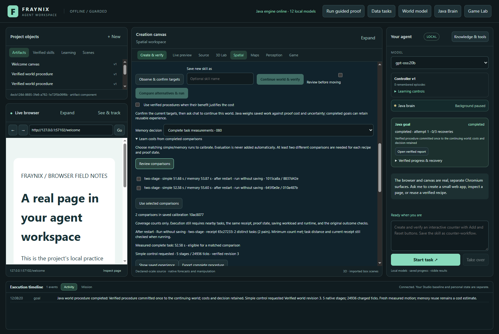
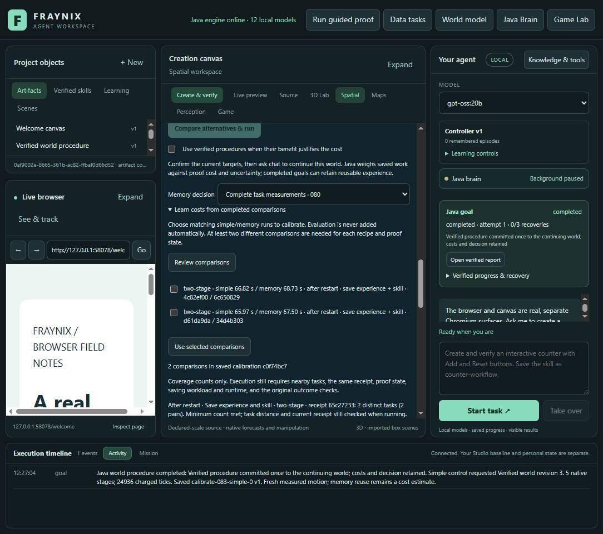
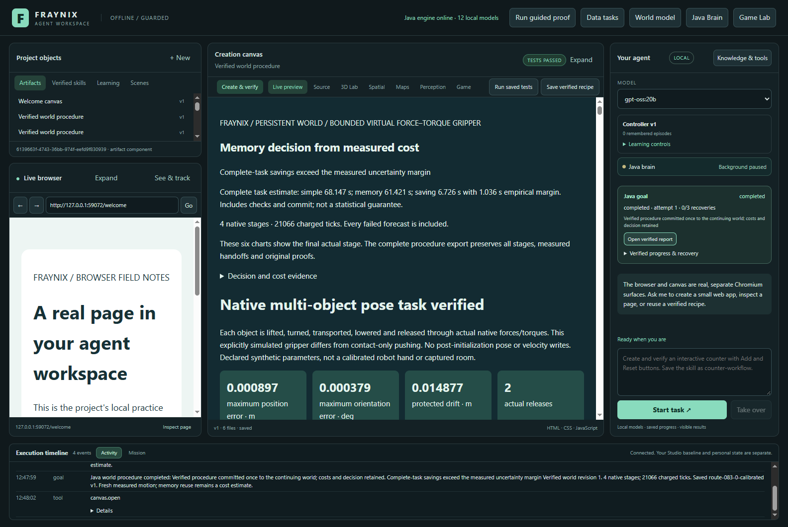
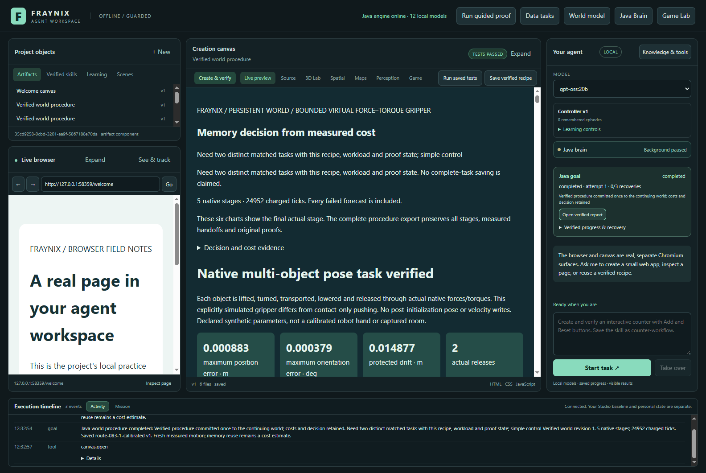

What a restart
and saving really cost.
Actual Java tasks, matched calibration conditions and fresh comparisons. An available estimate is a separate result from a useful decision.
Coverage with the checks intact
Four logical Java processors and a 768 MiB heap; fixed Windows affinity. Cold means a new owner before an uninterrupted task. Warm means a real, verified same-owner warm-up. Interrupted timings remain excluded. These are labelled simulations, not new camera measurements.
Prediction versus completed work
Estimates are compared against actual simple and explicit-memory controls. The calibrated control also pays for loading and checking its model. Complete goal time includes native work, verification, the report, commit and requested saving; final timing-write and transport are outside it. Startup, warm-up and reopening costs are retained separately. Empirical intervals are not statistical confidence guarantees.
Replay original motion
A top-down point projection of retained native positions. Display frames are subsampled; all original samples remain in the evidence archive. This is recorded motion, not a new simulation.
Evidence informs the decision
Complete source inventory
The actual application









